Day 4｜寬恕之丘、警察攔截、皇后之橋
2026 年 5 月 24 日 · Pamplona → Puente la Reina · 24km
趕在日出前再次出發。或許是週末的關係，清晨五點的酒吧外，還留著昨夜狂歡的人潮。揹起行囊，就這樣靜靜地跟這座還在微醺的城市擦肩而過。
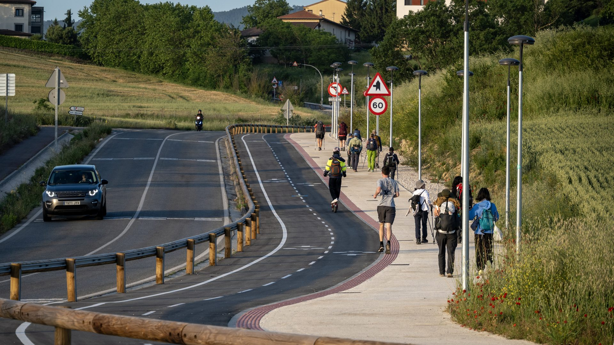
走過白沙屯媽祖進香，我得誠實說：這裡每天無止盡的上坡與下坡，難度絕對更高。
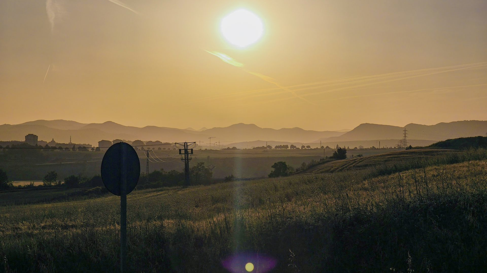
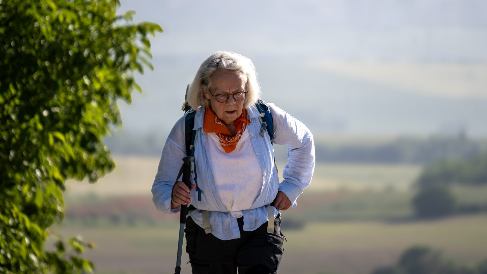
但今天的田野無比遼闊。放眼望去一整片無邊的綠油油，視覺的震撼直接忘卻了雙腳的疲勞。這種美，是靠雙腳一步步熬過來才能真正體會的。眼前的廣闊提醒了人的渺小，卻也慶幸能自由地去感受這個世界。
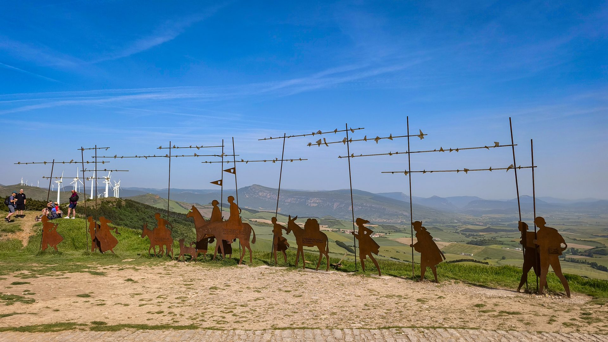
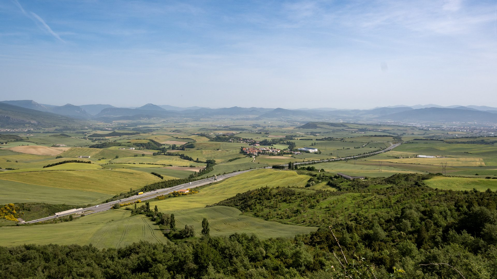
一路喘著氣爬升，終於來到山頂。這排迎風而立的鐵雕朝聖者是經典地標——寬恕之丘。山頂上這群真人大小的鐵雕像，代表著不同時代的朝聖者。紀念碑上寫著：「這裡是風之徑與星之徑交會之處。」傳說來到這裡，要學會放下心裡的包袱，原諒別人，也放過自己。站在山頂俯瞰遼闊的大地，心裡有一種說不出的平靜與釋然。
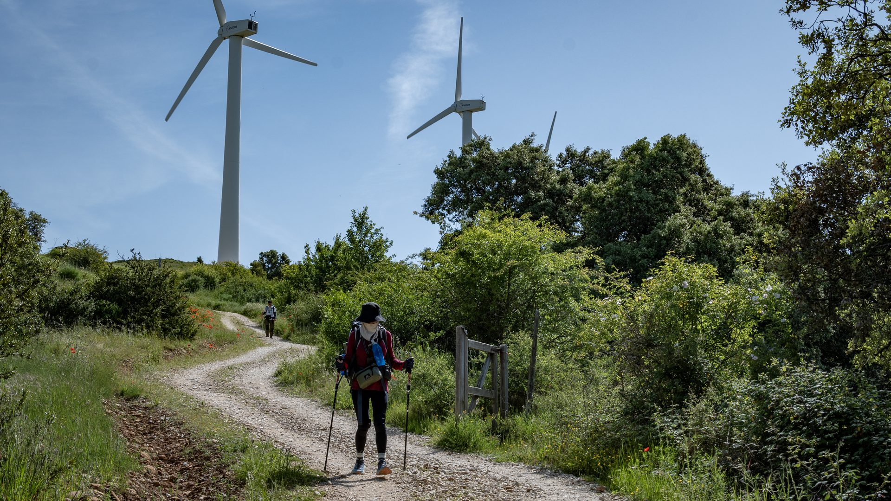
翻過寬恕之丘，緊接著是一段大魔王等級的碎石陡降坡。
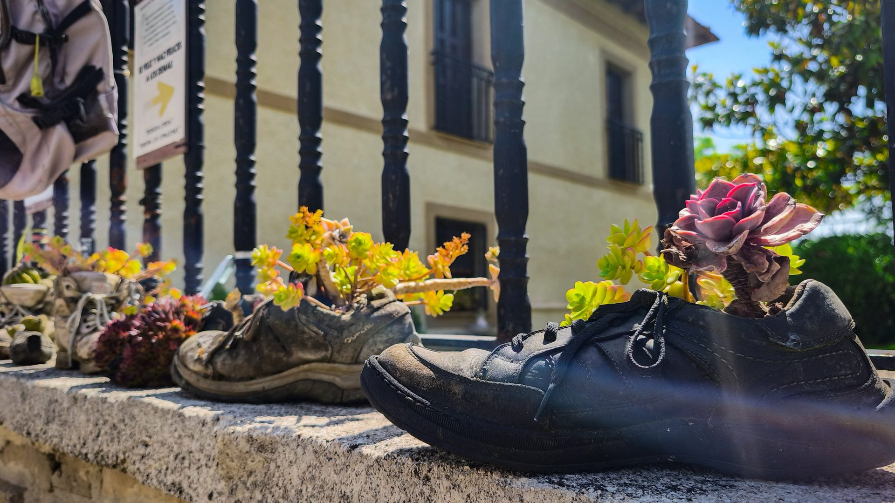
原本下坡我因為怕摔，總習慣把重心死死往後壓著煞車。但經過朋友提點，直接切換成越野跑模式——順著慣性放行，專注眼前的踩點。沒想到，不僅下坡速度翻倍，膝蓋竟然也跟著解脫了。
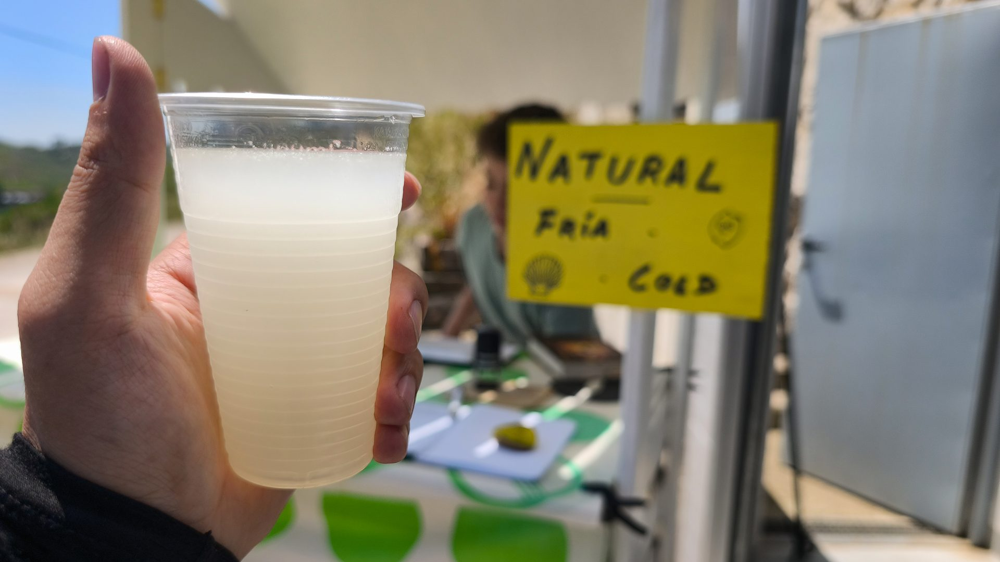
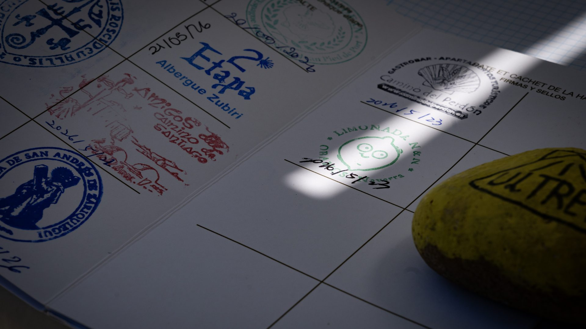
然而太陽曬到四十度，完全沒有遮蔽物。我全身包緊緊、蒙面防曬，因為皮膚不好會熱過敏跟起疹子。結果——被警察攔下來，要求脫面罩。警察大概以為我是什麼可疑人物，全身包緊緊又是黑色的，太像恐怖份子了。我們都笑了，解釋了半天才放行。原來歐洲還有蒙面法，這也是文化差異的有趣體驗。
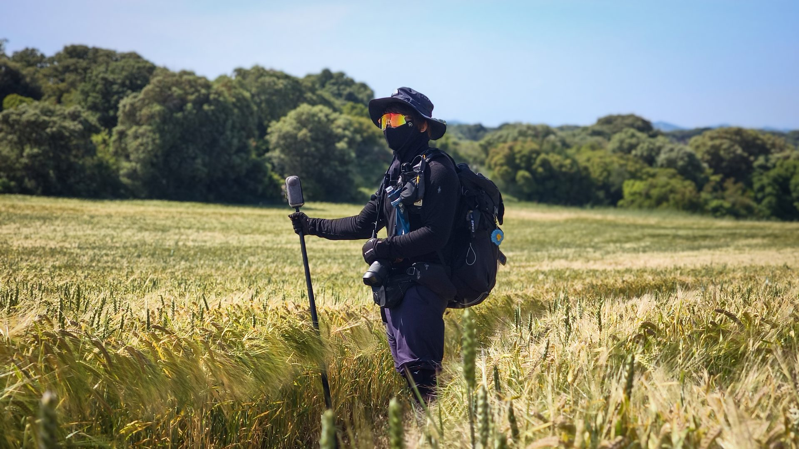
中午實在熱得發昏，好在路邊出現了這家 Bar——這可是電影《The Way》裡取景過的經典休息點。直接點了一份超大雞肉漢堡配上冰涼啤酒當中餐，這一口下去，真的是朝聖路上的終極救贖。
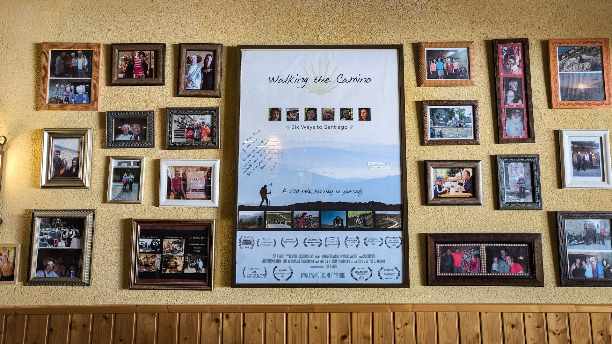
西班牙的正午烈日，撐著陽傘也擋不住。快被烤熟時，路邊一攤自由捐贈的檸檬汁成了最強救贖，一口灌下瞬間透心涼。旁邊還有個超可愛的檸檬專屬印章，護照必蓋。這條路上，往往是這些不起眼的小細節，給了人最溫暖的驚喜。
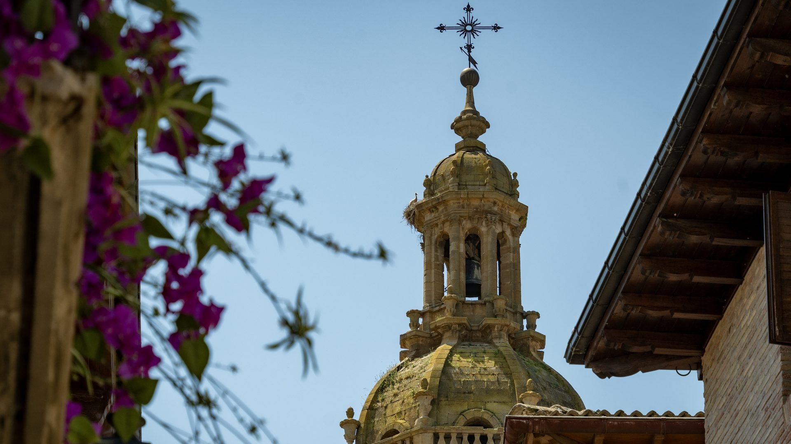
途經一場婚禮現場，終於抵達了小鎮的庇護所。趕緊洗去一身疲憊，趁著正午烈日曬衣服，也順便曬了手工肥皂。沒想到才短短十幾分鐘，西班牙的毒太陽直接把肥皂融掉了三分之一。朝聖之路就是這樣，連這種荒謬的小插曲，都是絕佳的故事。
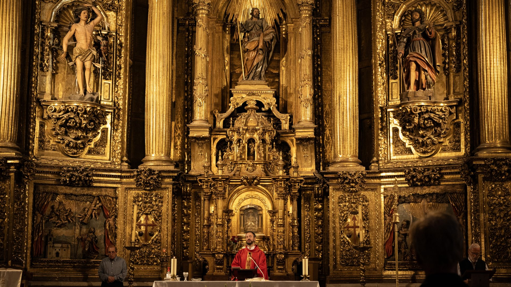
下午參加了教堂的朝聖者祝福。神父逐一為我們戴上金屬小十字架。體積很小，重量很輕，但在掛上胸前的那一刻，承載的不是重量，而是滿滿的祝福。
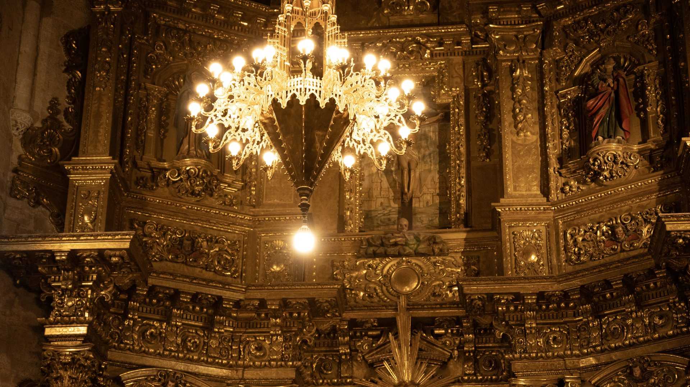
夕陽西下，我們來到了皇后之橋。
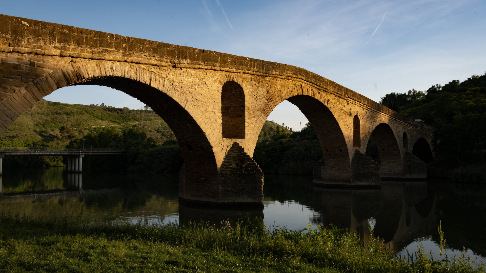
這座十一世紀的羅馬式石橋擁有標誌性的六個拱門。傳說當年是由皇后為了幫助朝聖者安全渡河而特別建造。千年過去，流水與石橋依然保持著最初的模樣。站在橋上迎著夕陽，朝聖之路的歷史感瞬間具象化。今天的疲憊，就在這片千年的金黃餘暉中徹底釋放。
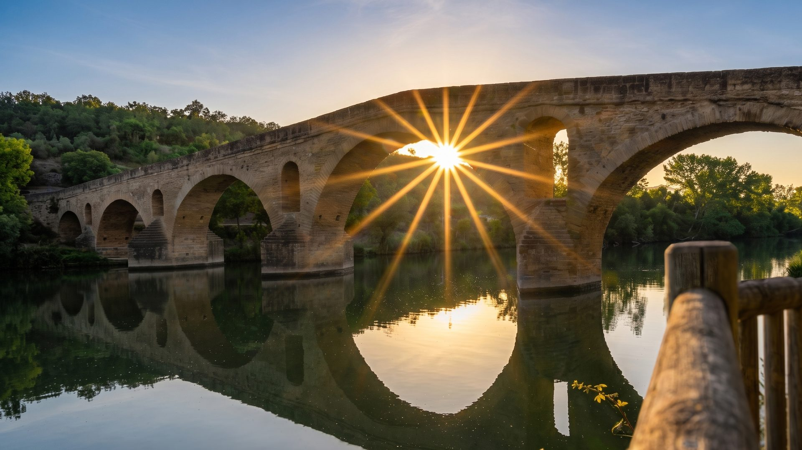
📚 朝聖者小百科：Alto del Perdón & Puente la Reina
寬恕之丘（Alto del Perdón） 山頂的鐵人雕塑群是朝聖之路最經典的畫面——1996 年由藝術家 Vicente Galbete 創作，一排鐵製朝聖者與驢子被風吹得向前傾斜。雕塑上的銘文寫著：
「Donde se cruza el camino del viento con el de las estrellas.」
>
「風之路與星之路交會之處。」
皇后之橋（Puente la Reina） 的鎮名來自那座 11 世紀的羅馬式石橋，傳說是一位皇后（Doña Mayor）為了幫助朝聖者渡過 Arga 河而建。六個拱門，沉穩地跨在河上，千年不變。
從這裡開始，兩條朝聖路線——從 Somport 來的阿拉貢之路和從 Roncesvalles 來的法國之路——正式匯合，從此合而為一，直通 Santiago。
📸 鐵人雕塑配藍天白雲是經典構圖，下午三點後的低角度光最美
>
🍽️ 鎮上餐廳不多，建議在庇護所和朝聖者一起煮
🥾 約 24 km
🌡️ 40°C 高溫
👮 被警察攔下要求脫面罩
🍋 自由捐贈檸檬汁
✝️ 教堂祝福 + 小十字架
☀️ Buen Camino 🙏🏻👣
| 中餐：啤酒＋漢堡 | €13.0 |
| 自由捐贈檸檬汁 | €2.0 |
| 住宿 | €18.0 |
| 朝聖者餐：豬排 | €15.0 |
| 合計 | €48.0 |